オープンCAEシンポジウム2026＠金沢 A51
シュレーディンガー方程式／グロス・ピタエフスキー方程式ソルバ
schrodingerFoam の試作
オープンCAEシンポジウム2026＠金沢 A51
はじめに
応力
solidDisplacementFoam
拡散
laplacianFoam
ポテンシャル流れ
potentialFoam
金融
financialFoam
時間・空間の微分を含むシュレーディンガー方程式も、同じように OpenFOAM で解けるはず。
2 / 18
オープンCAEシンポジウム2026＠金沢 A51
古典力学から量子力学へ
ニュートン形式
m\ddot{\boldsymbol{x}} = -\nabla V(\boldsymbol{x})
力と加速度で運動を決める
ラグランジュ形式
L = T - V
\dfrac{d}{dt}\dfrac{\partial L}{\partial \dot q} - \dfrac{\partial L}{\partial q} = 0
最小作用の原理から運動を決める
ハミルトン形式
H = \dfrac{p^2}{2m} + V(q)
\dot q = \dfrac{\partial H}{\partial p},\quad \dot p = -\dfrac{\partial H}{\partial q}
位置 q と運動量 p を対等に扱う
量子化
\boldsymbol{p}\ \to\ -i\hbar\nabla \quad\Longrightarrow\quad \hat H = -\dfrac{\hbar^2}{2m}\nabla^2 + V,\qquad i\hbar\dfrac{\partial\psi}{\partial t} = \hat H\psi
相対論では E^2=p^2c^2+m^2c^4 に E\to i\hbar\,\partial_t,\ \boldsymbol{p}\to -i\hbar\nabla を入れると、クライン–ゴルドン方程式 \tfrac{1}{c^2}\partial_t^2\psi=\nabla^2\psi-(mc/\hbar)^2\psi
・エーレンフェストの定理：期待値 \langle x\rangle、\langle p\rangle はニュートンの運動方程式に従う（調和ポテンシャルでは厳密に一致 → 例題 2）
・\psi=\sqrt{\rho}\,e^{iS/\hbar} と置くと、位相 S は量子ポテンシャル項の付いたハミルトン–ヤコビ方程式に従う（\hbar\to 0 で古典）。GP 方程式では連続の式＋オイラー方程式 → 「量子流体」
3 / 18
オープンCAEシンポジウム2026＠金沢 A51
いろいろな方程式と OpenFOAM のソルバ
| 対象 | 基礎方程式 | OpenFOAM のソルバ |
|---|---|---|
| 質点の古典力学 | m\,\dfrac{d^2\boldsymbol{x}}{dt^2} = -\nabla V(\boldsymbol{x}) | ニュートンの運動方程式（常微分方程式） |
| 熱伝導・拡散 | \dfrac{\partial T}{\partial t} = \alpha\nabla^2 T | laplacianFoam |
| 流体（非圧縮） | \dfrac{\partial \boldsymbol{u}}{\partial t} + (\boldsymbol{u}\cdot\nabla)\boldsymbol{u} = -\dfrac{\nabla p}{\rho} + \nu\nabla^2\boldsymbol{u} | icoFoam など |
| 電磁場（マクスウェル） | \nabla\times\boldsymbol{E}=-\dfrac{\partial\boldsymbol{B}}{\partial t},\quad \nabla\times\boldsymbol{H}=\boldsymbol{J}+\dfrac{\partial\boldsymbol{D}}{\partial t} | electrostaticFoam、mhdFoam |
| 量子力学 | i\hbar\dfrac{\partial\psi}{\partial t} = -\dfrac{\hbar^2}{2m}\nabla^2\psi + V\psi | schrodingerFoam（本研究） |
| 量子流体（BEC） | i\hbar\dfrac{\partial\psi}{\partial t} = -\dfrac{\hbar^2}{2m}\nabla^2\psi + V\psi + g|\psi|^2\psi | schrodingerFoam（g ≠ 0） |
| 相対論的量子（クライン–ゴルドン） | \dfrac{1}{c^2}\dfrac{\partial^2\psi}{\partial t^2}=\nabla^2\psi-\left(\dfrac{mc}{\hbar}\right)^2\psi | （同じ枠組みで実装可能） |
場の方程式は、どれも「時間微分 ＝ 空間微分（ラプラシアン・回転）＋ ソース項」の形。
→ シュレーディンガー方程式も、OpenFOAM で解けそう
4 / 18
オープンCAEシンポジウム2026＠金沢 A51
本研究の内容
時間依存シュレーディンガー方程式と、非線形のグロス・ピタエフスキー（GP）方程式
複素波動関数を、実部・虚部の 2 本の実数場に分ける
実時間はノルムが保存されるクランク・ニコルソン法、基底状態は完全陰的な虚時間発展
トンネル効果・調和振動子・トラップ開放・ダークソリトンからの量子渦生成
5 / 18
オープンCAEシンポジウム2026＠金沢 A51
基礎方程式
時間依存シュレーディンガー方程式（|\psi|^2 ＝ 存在確率密度、\int|\psi|^2dV=1）
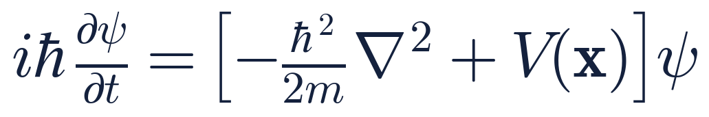
グロス・ピタエフスキー（GP）方程式（BEC、|\psi|^2 ＝ 粒子数密度、\int|\psi|^2dV=N）
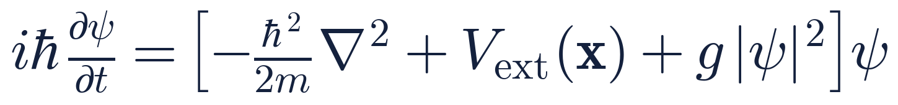
第 3 項 g|\psi|^2 が非線形項（粒子間相互作用）。1 つのソルバの設定（g）で 2 つの方程式を扱う。
6 / 18
オープンCAEシンポジウム2026＠金沢 A51
無次元化
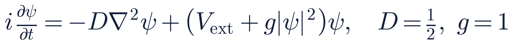
長さ・時間
\ell=\hbar/\sqrt{m\mu},\ \ \tilde t=\mu t/\hbar
ヒーリング長
\xi=\sqrt{D/(g n_0)}\approx 0.707
格子幅の目安
\Delta x=\xi/4\approx 0.177
以下、右辺を与えるハミルトニアン演算子を H と書く。
7 / 18
オープンCAEシンポジウム2026＠金沢 A51
実装 1 複素波動関数の分離
OpenFOAM には複素数の場（complexScalarField）はあるが、行列を解く陰的演算（fvm::）には対応していなかった。
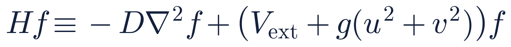
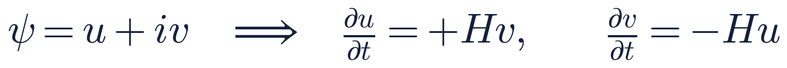
H の係数はすべて実数 → 実部・虚部を比べるだけで、OpenFOAM の実スカラー場（Psire、Psiim）でそのまま扱える。
8 / 18
オープンCAEシンポジウム2026＠金沢 A51
実装 2 ノルム保存の時間離散化
前進オイラー法（陽解法）：今の値だけで右辺を評価
\dfrac{\psi^{n+1}-\psi^n}{\Delta t}=-iH\psi^n\ \Rightarrow\ \psi^{n+1}=(1-i\Delta t\,H)\,\psi^n
固有値 E のモードで絶対値（ノルム）をとると
|\psi^{n+1}|=|1-iE\Delta t|\,|\psi^n|=\sqrt{1+(E\Delta t)^2}\,|\psi^n|>|\psi^n|
毎ステップ必ず大きくなる → Δt をどれだけ小さくしても発散（無条件不安定）
クランク・ニコルソン法：新旧の平均で右辺を評価
\dfrac{\psi^{n+1}-\psi^n}{\Delta t}=-\dfrac{i}{2}H\left(\psi^{n+1}+\psi^n\right)\ \Rightarrow\ \psi^{n+1}=\dfrac{1-\frac{i}{2}\Delta t\,H}{1+\frac{i}{2}\Delta t\,H}\,\psi^n
固有値 E のモードで絶対値（ノルム）をとると
|\psi^{n+1}|=\dfrac{|1-\frac{i}{2}E\Delta t|}{|1+\frac{i}{2}E\Delta t|}\,|\psi^n|=|\psi^n|
分子と分母が複素共役で絶対値が等しい → 任意の Δt でノルム保存
下図：1 ステップの増幅率 |G|=|\psi^{n+1}|/|\psi^n|（左）と、N ステップ後の振幅 |G|^N（右）
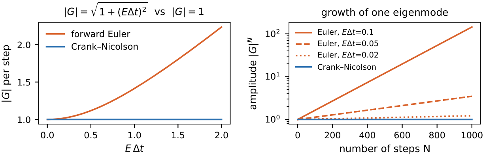
9 / 18
オープンCAEシンポジウム2026＠金沢 A51
実装 3 虚時間発展による基底状態
目的：実時間の計算を、余分なエネルギーを持たない一番静かな状態（基底状態 \phi_0）から始めたい
① 時間 t を −iτ に置き換える（τ：虚時間）
i\dfrac{\partial\psi}{\partial t}=H\psi\ \ \xrightarrow{\ t=-i\tau\ }\ \ \dfrac{\partial\psi}{\partial\tau}=-H\psi
i が消えて、拡散方程式（熱が広がる式）と同じ形になる
② 固有状態 H\phi_n=E_n\phi_n\ (E_0\lt E_1\lt\cdots) で展開して解く
\psi(\tau)=\sum_n c_n\,e^{-E_n\tau}\,\phi_n=e^{-E_0\tau}\Big[\,c_0\,\phi_0+\sum_{n\ge1}c_n\,e^{-(E_n-E_0)\tau}\,\phi_n\Big]
E_n-E_0\gt0 なので \tau\to\infty で第 2 項 → 0。
規格化すると \psi(\tau)/\lVert\psi(\tau)\rVert\ \to\ \phi_0（c_0\ne0）。
エネルギーの高い成分ほど速く消え、基底状態だけが残る（元の時間 t の e^{-iE_nt} は大きさ 1 で、どの成分も消えない）。
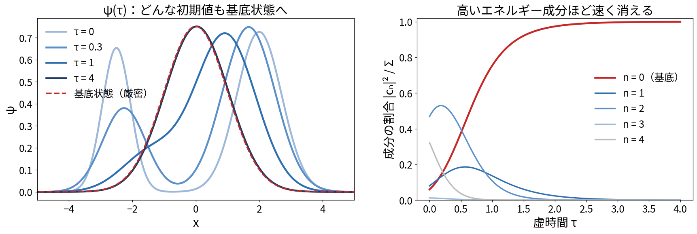
手続き：拡散方程式と同じ形なので、laplacianFoam の陰解法がそのまま使える（全体の大きさも減るので毎回規格化）
① 初期値
ガウス関数など適当な形
→
② 1 ステップ進める
\dfrac{\partial\psi}{\partial\tau}=-(H-\mu)\psi を完全陰的に解く
→
③ 規格化・μ 更新
\int|\psi|^2dV=1 に戻し、\mu=\langle\psi|H|\psi\rangle
→
④ 収束判定
μ が一定 → 基底状態。実時間の初期値へ
10 / 18
オープンCAEシンポジウム2026＠金沢 A51
ソースコード（schrodingerFoam.C 抜粋）
解く式（シュレーディンガー／GP）
i\dfrac{\partial\psi}{\partial t} = -D\nabla^2\psi + W\psi,\qquad W = V_{\mathrm{ext}} + g|\psi|^2
W：ポテンシャル ＝ 外部ポテンシャル V_{\mathrm{ext}}（障壁・トラップ）＋ 粒子間相互作用 g|\psi|^2
コードでは場 W にまとめ、虚時間は fvm::SuSp(W − mu, ψ) で陰的に足す
元の laplacianFoam（拡散方程式）
\dfrac{\partial T}{\partial t} = \nabla\cdot(D_T\nabla T)
fvm::ddt(T) - fvm::laplacian(DT, T) == fvOptions(T)
schrodingerFoam：虚時間（mode imaginaryTime）
\dfrac{\partial u}{\partial \tau} = D\nabla^2 u - (W-\mu)\,u \quad (v\ \text{も同じ})
// 虚時間: 拡散方程式と同じ形 → 完全陰的 volScalarField W(Vnow + g*(sqr(Psire) + sqr(Psiim))); solve(fvm::ddt(Psire) - fvm::laplacian(D, Psire) + fvm::SuSp(W - mu, Psire)); solve(fvm::ddt(Psiim) - fvm::laplacian(D, Psiim) + fvm::SuSp(W - mu, Psiim)); // 各ステップ後に ∫|ψ|² を規格化
schrodingerFoam：実時間（mode realTime）
u^{n+1} = u^n + \tfrac{\Delta t}{2}\left(Hv^{n+1}+Hv^n\right),\quad v^{n+1} = v^n - \tfrac{\Delta t}{2}\left(Hu^{n+1}+Hu^n\right)
// 実時間: クランク・ニコルソン + Picard 反復 for (int corr = 0; corr < nCorr; ++corr) { volScalarField W(Vnow + g*(sqr(Psire) + sqr(Psiim)) - muEff); const volScalarField Hv(-D*fvc::laplacian(Psiim) + W*Psiim); Psire = Psire0 + 0.5*dt*(Hv + Hv0); // 新旧の平均 W = Vnow + g*(sqr(Psire) + sqr(Psiim)) - muEff; const volScalarField Hu(-D*fvc::laplacian(Psire) + W*Psire); Psiim = Psiim0 - 0.5*dt*(Hu + Hu0); }
11 / 18
オープンCAEシンポジウム2026＠金沢 A51
チュートリアル計算例
シュレーディンガー方程式
i\dfrac{\partial\psi}{\partial t}=-D\nabla^2\psi+V\psi
3 例題とも、ノルムの
相対変動 10⁻⁷ 以下
GP 方程式
i\dfrac{\partial\psi}{\partial t}=-D\nabla^2\psi+V\psi+\underline{g|\psi|^2\psi}
下線：粒子間の
相互作用（非線形）
| 例題 | 解く方程式 | 何が見えるか | 計算結果 |
|---|---|---|---|
| 量子トンネル 1 次元 | シュレーディンガー方程式 線形（g = 0） | 古典的には越えられない障壁を、 波束の一部が通り抜ける | 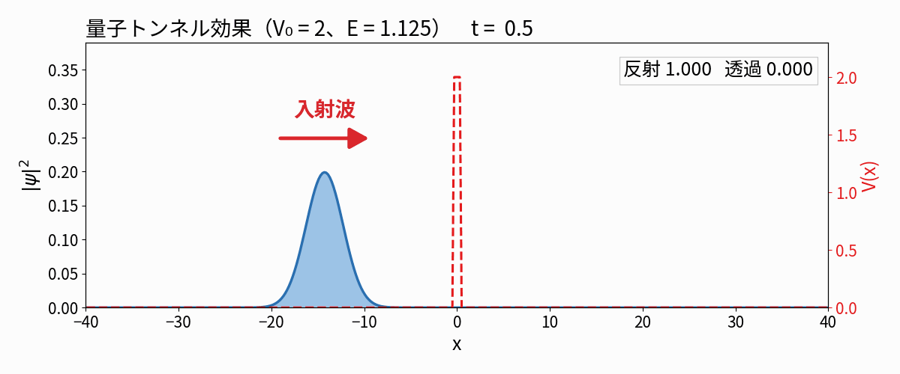 |
| 調和振動子 1 次元 | シュレーディンガー方程式 線形（g = 0） | 形を保ったまま、 谷底を中心に往復する | 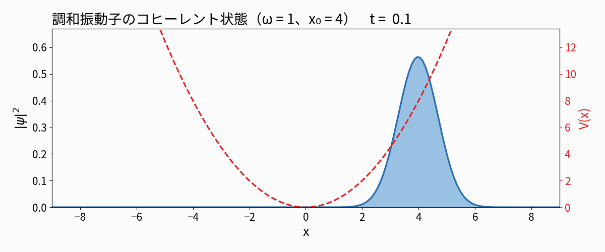 |
| トラップの開放 2 次元 | シュレーディンガー方程式 線形（g = 0） | 閉じ込めを外すと、 雲の縦横比が反転する | 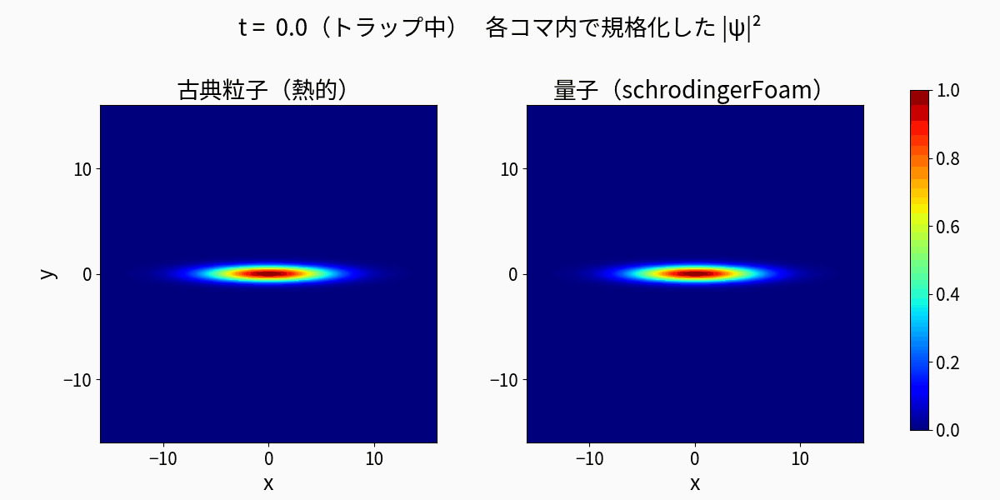 |
| ダークソリトン 2 次元 | GP 方程式 非線形（g = 1） | 帯状のくぼみが崩れて、 量子渦が生まれる | 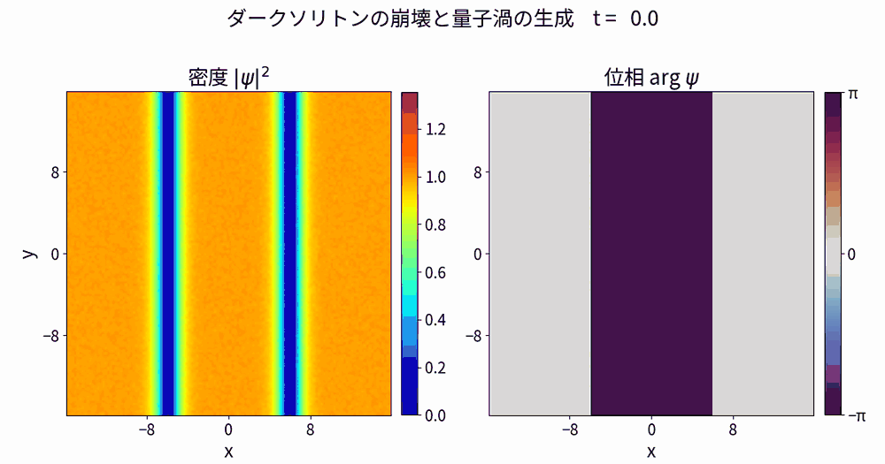 |
12 / 18
オープンCAEシンポジウム2026＠金沢 A51
例題 1 量子トンネル効果（1 次元）
解く方程式
シュレーディンガー方程式（1 次元、g = 0）
i\dfrac{\partial\psi}{\partial t}=-D\dfrac{\partial^2\psi}{\partial x^2}+V(x)\,\psi
線形。障壁は右辺の V(x)
ポテンシャル
V(x)=\begin{cases}V_0 & |x|\lt a/2\\ 0 & \text{それ以外}\end{cases}
幅 a=0.8・高さ V_0=2 の「壁」。波束のエネルギー E=1.125\lt V_0 なので、古典粒子なら必ずはね返る
ガウス波束（x_0=-15,\ \sigma=2,\ k_0=1.5）を左から入射
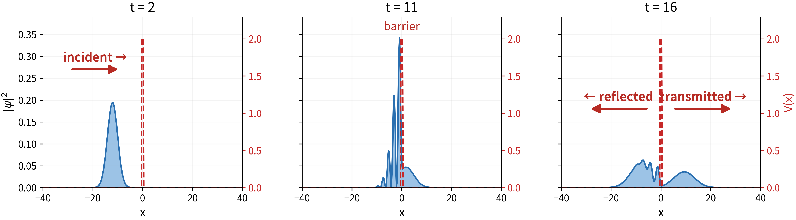
透過率（t = 22）：計算 0.380
理論（波数分布で重み付け）：0.383
13 / 18
オープンCAEシンポジウム2026＠金沢 A51
例題 2 調和振動子ポテンシャル（1 次元）
解く方程式
シュレーディンガー方程式（1 次元、g = 0）
i\dfrac{\partial\psi}{\partial t}=-D\dfrac{\partial^2\psi}{\partial x^2}+V(x)\,\psi
線形。ばねは右辺の V(x)
ポテンシャル
V(x)=\tfrac12\,\omega^2x^2\quad(\omega=1)
ばねのポテンシャル。底からずれるほど強く引き戻す（力 F=-\omega^2x、フックの法則）。基底状態を x_0=4 ずらして初期値に
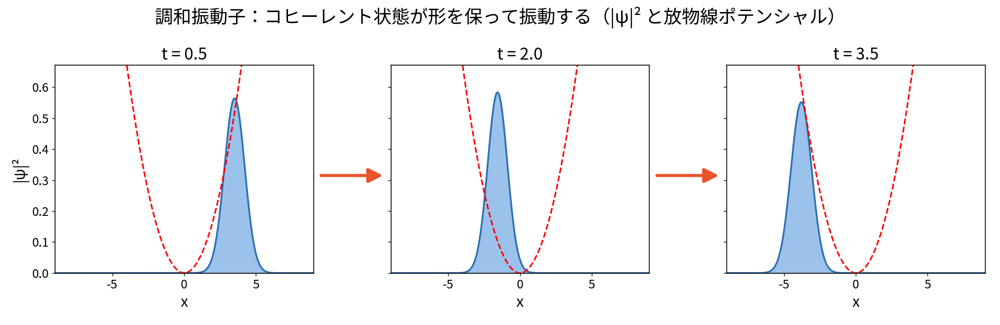
なぜ調和振動子を例題にするのか
① どんな安定点も、近くでは放物線
V(x)\approx V(x_e)+\tfrac12V^{\prime\prime}(x_e)(x-x_e)^2
小さな振動は、分子振動も格子振動もすべてこの形
② 解析解があり、検証に使える
エネルギー準位 E_n=\omega\,(n+\tfrac12) が等間隔。数値解を厳密解と比べられる
③ 古典の運動と厳密に一致
準位が等間隔なので波束は崩れず、\langle x\rangle=x_0\cos\omega t（ばねの往復運動そのもの）
14 / 18
オープンCAEシンポジウム2026＠金沢 A51
例題 3 トラップの開放（2 次元）
解く方程式
シュレーディンガー方程式（2 次元、g = 0）
i\dfrac{\partial\psi}{\partial t}=-D\nabla^2\psi+V(x,y,t)\,\psi
線形。t = 2 で V を 0 にする
ポテンシャル
V=\begin{cases}\tfrac12(\omega_x^2x^2+\omega_y^2y^2) & t\lt 2\\ 0 & t\ge 2\end{cases}
x 方向にゆるく（\omega_x=0.03125）、y 方向にきつい（\omega_y=2）楕円の「お椀」に閉じ込め、t=2 でお椀を取り去る（自由膨張）
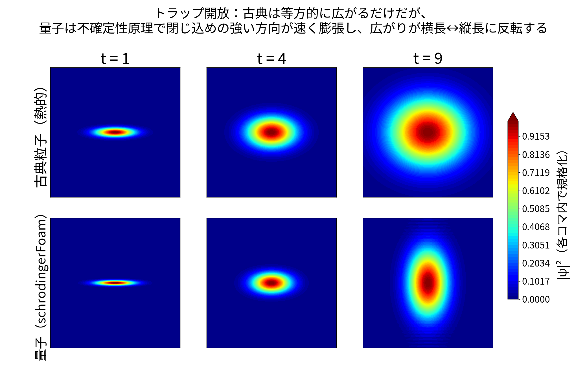
意図：同じ横長の雲でも、古典と量子で広がり方が逆になる（\tau=t-2）。
計算の縦横比は解析解どおり t ≈ 6 で 1 になり、その後縦長に反転した。
古典粒子：丸くなるだけ
x_j(t)=x_{j0}+v_j\tau\ \Rightarrow\ \sigma_j^2=\sigma_{j0}^2+\sigma_v^2\tau^2
量子：きつい y 方向ほど速く広がる
\Delta p_j=\dfrac{\hbar}{2\sigma_{j0}}\ \Rightarrow\ \sigma_j=\sigma_{j0}\sqrt{1+(\omega_j\tau)^2}
先行研究：量子乱流の BEC は反転しない
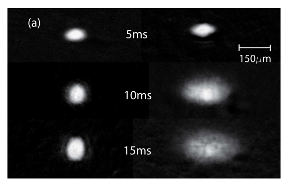
左：通常の BEC → 縦横比が反転（今回の計算と同じ）
右：量子乱流の BEC → 形を保ったまま膨張
仕組みはまだ未解明 → 次の研究テーマ（17 ページ）
図：E. A. L. Henn et al., Phys. Rev. Lett. 103, 045301 (2009)
15 / 18
オープンCAEシンポジウム2026＠金沢 A51
例題 4 ダークソリトンからの量子渦生成（2 次元、GP 方程式 g = 1）
解く方程式
GP 方程式（2 次元、g = 1）
i\dfrac{\partial\psi}{\partial t}=-D\nabla^2\psi+V_{\mathrm{ext}}\psi+g|\psi|^2\psi
非線形。第 3 項が粒子間の相互作用
ポテンシャル
V_{\mathrm{ext}}=0,\qquad W=g|\psi|^2\ \ (g=1)
外からの力はなし（周期境界）。粒子どうしの反発 g|\psi|^2 が「自分自身が作るポテンシャル」になり、密度の高い所ほど押し返す
① 初期状態：位相を固定した虚時間発展で作る
作る初期波形
\psi_0=\tanh\frac{x+x_0}{w}\,\tanh\frac{x-x_0}{w}
2 本のダークソリトン
（w=1,\ x_0=6）
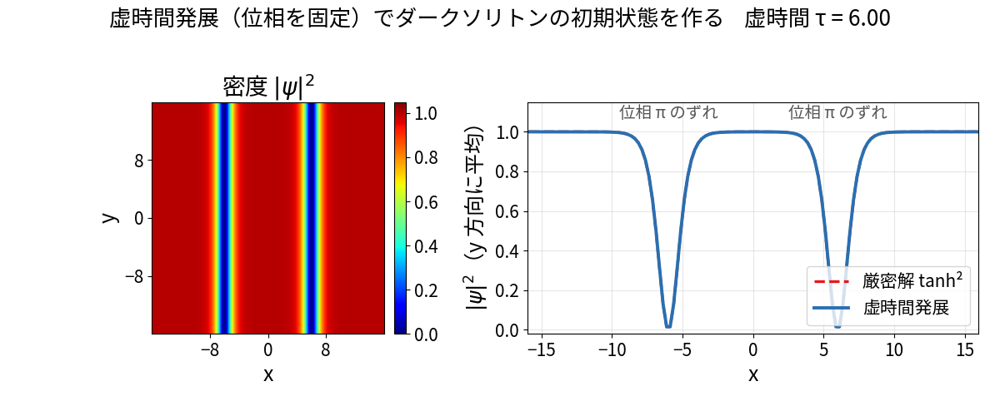
密度 1・2 本の間だけ位相 π の粗い初期値から、位相を固定して密度だけを緩和 → 上の初期波形に収束（差 0.004、\mu\to0.9995\approx gn_0）。位相を固定しないと、ダークソリトン（励起状態）は消えて一様な基底状態になる。
② 白色ノイズ（振幅 10^{-2}）を加えて実時間発展
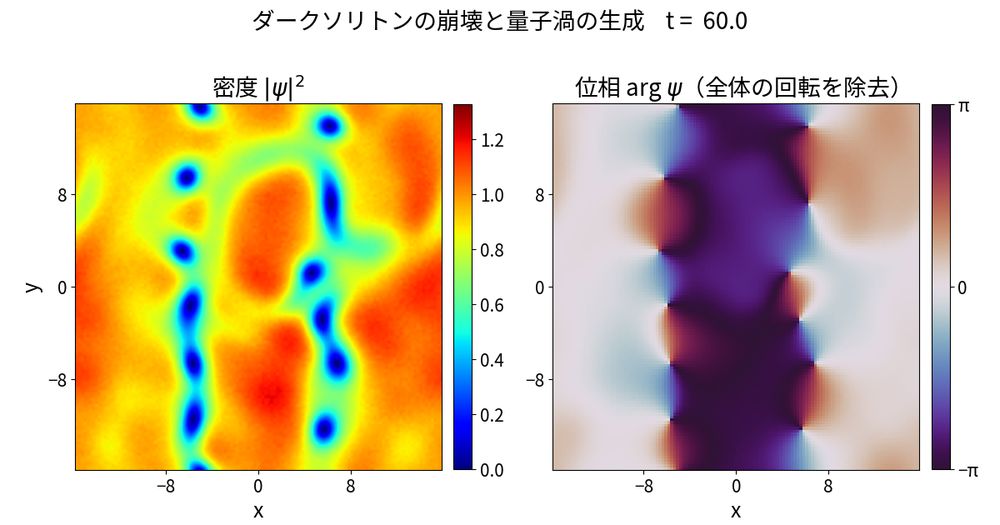
巻き数 ±1 の量子渦：t = 60 で 12 個、t = 100 で 10 個
16 / 18
オープンCAEシンポジウム2026＠金沢 A51
今後の展開
① アナロジー研究：古典流体と量子流体
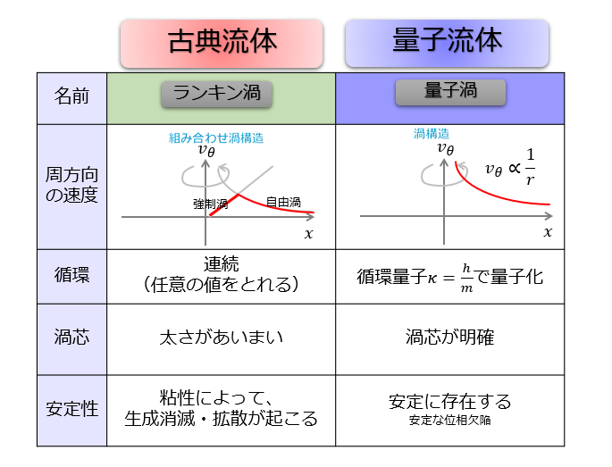
古典：循環は任意、粘性で拡散
量子：循環が \kappa=h/m に量子化
GP：粘性項なし、量子圧力項あり
\text{NS:}\ \ \dfrac{D\boldsymbol{v}}{Dt} = -\dfrac{\nabla p}{\rho} + \nu\nabla^2\boldsymbol{v}
\text{GP:}\ \ \dfrac{D\boldsymbol{v}}{Dt} = -\dfrac{\nabla p}{mn} - \dfrac{\nabla V}{m} + \dfrac{1}{m}\nabla\!\left(\dfrac{\hbar^2}{2m}\dfrac{\nabla^2\sqrt{n}}{\sqrt{n}}\right)
② KS-DFT：別ソルバ ksdftFoam を試作中
\left[-\tfrac12\nabla^2 + V_{\mathrm{ext}} + V_H[n] + V_{xc}[n]\right]\psi_i = \varepsilon_i\psi_i
n=\textstyle\sum_i|\psi_i|^2,\qquad \nabla^2 V_H = -4\pi n 密度で V が変わる → 自己無撞着（SCF）反復
| 原子（ソフト Coulomb） | 64³ | 外挿 | 参照解 | |
|---|---|---|---|---|
| H（Coulomb のみ） | ε | −0.38388 | −0.38093 | −0.38087 |
| He（＋Hartree） | E | −1.14917 | −1.1426 | −1.1418 |
| He（＋LDA 交換） | E | −1.62681 | −1.6163 | −1.6147 |
単位 Hartree。同じモデルの径方向参照解と 2 次精度で一致。交換項で自己相互作用誤差が補正される。純 Coulomb での文献値比較はこれから
③ 有限温度では常流体成分との力の受け渡しを実装し、量子流体と古典流体の連成も OpenFOAM 内で扱う
17 / 18
オープンCAEシンポジウム2026＠金沢 A51
まとめ
① 複素波動関数を実部・虚部の 2 本の実数場に分け、既存の有限体積オペレータをそのまま流用
② 前進オイラーは |G| > 1 で発散。クランク・ニコルソン法でノルムを保存
③ 虚時間発展は拡散方程式と同じ形 → 完全陰的に基底状態を作成。実時間とモード切替で 1 つのソルバに
④ トンネル効果・調和振動子・トラップ開放・量子渦の 4 例題をチュートリアルとして整備
今後：GP 方程式による量子流体（量子渦の生成・崩壊など）の計算を進める
18 / 18